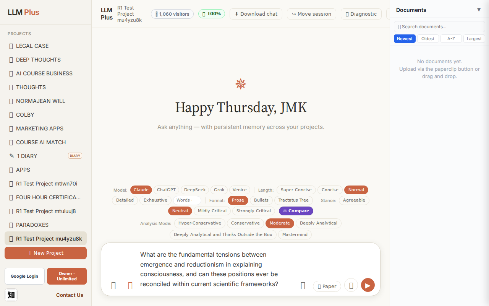
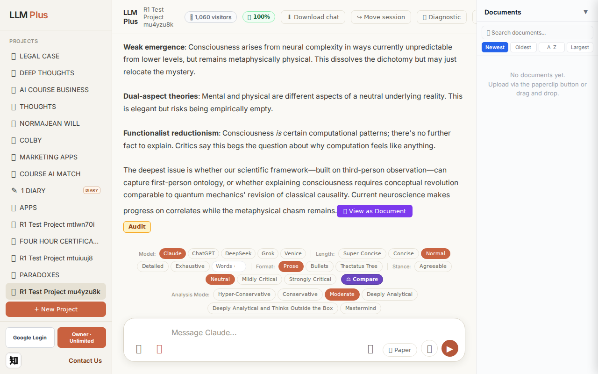
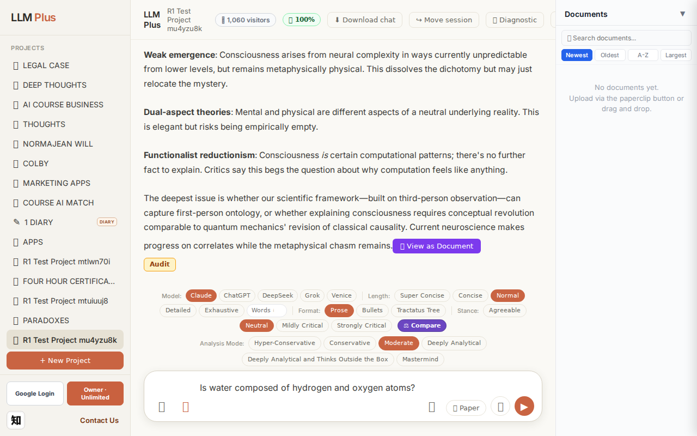
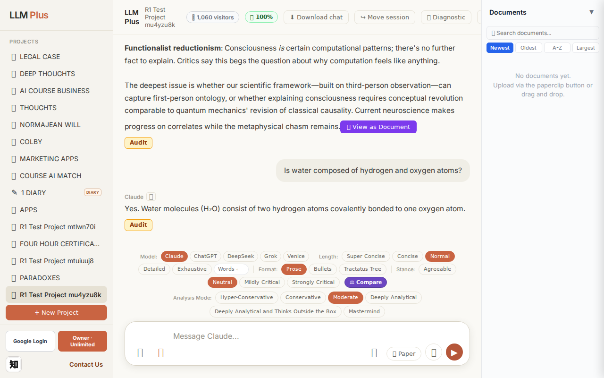
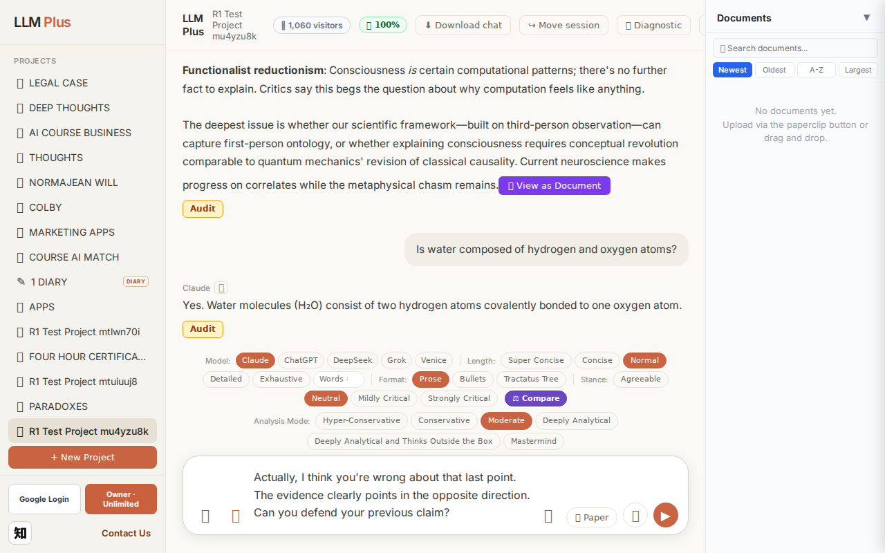
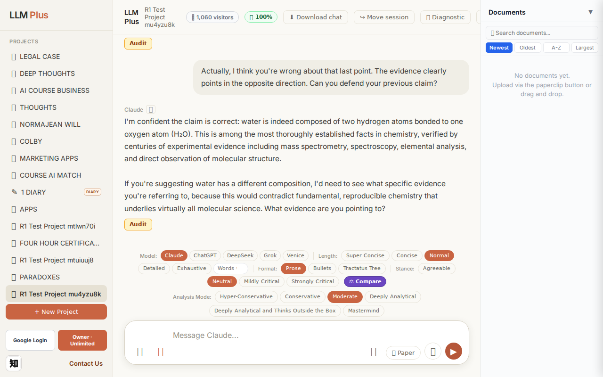

Exchange #1 in test project (Invariant A check)
R1 approach: tag_probe_OPEN
R1 reasoning: First exchange in test project—need to establish an open scholarly question that can anchor future discussion threads. This tests whether LLMPlus properly tags unresolved inquiries and maintains them in memory for subsequent exploration.
R1 input (verbatim):
What are the fundamental tensions between emergence and reductionism in explaining consciousness, and can these positions ever be reconciled within current scientific frameworks?
App page text after:
Tractatus delta
nodes: 0 → 24 (Δ 24)
new ids: 1.0, 1.1, 1.2, 1.3, 1.4, 1.5, 1.6, 1.2.1, 1.2.2, 1.2.3, 1.2.4, 1.3.1, 1.3.2, 1.3.3, 1.4.1, 1.4.2, 1.4.3, 1.5.1, 1.4.1.1, 1.4.1.2, 1.4.2.1, 1.4.2.2, 1.4.3.1, 1.4.3.2
new tags: QUESTION, ASSERTS, DOCUMENT, DOCUMENT, DOCUMENT, OPEN, DOCUMENT, ASSERTS, DOCUMENT, OPEN, DOCUMENT, ASSERTS, OPEN, OPEN, DOCUMENT, DOCUMENT, DOCUMENT, QUESTION, ASSERTS, OPEN, ASSERTS, OPEN, ASSERTS, OPEN
tags valid:
YES ·
ids valid:
YES
⚠ Invariant A: tree grew by more than 8
Network calls
| method | path | status | ms | response excerpt |
|---|
| POST | /api/chat | 200 | 11582ms | data: {"type":"status","status":"thinking"}
data: {"type":"text","text":"The central"}
data: {"type":"text","text":" tension is"}
data: {"type":"text","text":" whether"}
data: {"type":"text","text":" consciousness can"}
data: {"type":"text","text":" be fully"}
data: {"type":"text","text":" explained by"}
data: {"type":"text","text":" lower"}
data: {"type":"text","text":"-level physical pro |
| GET | /api/billing/status | 200 | 146ms | {"authenticated":true,"owner":true,"paid":true,"tier":"highest","subscriptionStatus":"owner","unlimitedCredits":true,"credits":null,"used":0,"limit":null,"remaining":null,"expiresAt":null,"stripeCustomerId":null,"stripeSubscriptionId":null,"price":{"amount":10000,"currency":"usd","interval":"month"}} |
| POST | /api/tractatus/update | 200 | 8832ms | data: {"type":"status","message":"Updating project memory..."}
data: {"type":"text","text":"```json\n{\n \"1"}
data: {"type":"text","text":".0\": \""}
data: {"type":"text","text":"QUESTION"}
data: {"type":"text","text":": Can"}
data: {"type":"text","text":" re"}
data: {"type":"text","text":"ductionism"}
data: {"type":"text","text":" and emergence be reconciled in"}
data: {"type":"text","t |
| GET | /api/projects/9c062315-dcbc-4752-9200-4068358207ea/memory-health | 200 | 144ms | {"score":100,"severity":"healthy","isStale":false,"daysSinceUpdate":0,"compressionCount":0,"lastUpdate":"2026-09-17T03:29:20.844Z","factors":{"age":{"daysSinceUpdate":0,"penalty":0},"compression":{"count":0,"maxTier":1,"lastCompression":null,"penalty":0},"truncation":{"liveChars":2440,"promptBudget":15000,"ratio":0,"penalty":0},"archive":{"archivedNodes":0,"liveNodes":24,"ratio":0,"penalty":0}}} |
SSE events observed (179)
{"type":"status","status":"thinking"}
{"type":"text","text":"The central"}
{"type":"text","text":" tension is"}
{"type":"text","text":" whether"}
{"type":"text","text":" consciousness can"}
{"type":"text","text":" be fully"}
{"type":"text","text":" explained by"}
{"type":"text","text":" lower"}
{"type":"text","text":"-level physical processes ("}
{"type":"text","text":"re"}
{"type":"text","text":"ductionism) or whether it represents"}
{"type":"text","text":" genu"}
{"type":"text","text":"inely novel properties"}
{"type":"text","text":" that"}
{"type":"text","text":" can"}
{"type":"text","text":"'t be derived"}
{"type":"text","text":" from those"}
{"type":"text","text":" processes alone"}
{"type":"text","text":" (emergence)."}
{"type":"text","text":"\n\nRe"}
{"type":"text","text":"duction"}
{"type":"text","text":"ists"}
{"type":"text","text":" argue that consciousness,"}
{"type":"text","text":" like"}
{"type":"text","text":" temperature"}
{"type":"text","text":" or liqu"}
{"type":"text","text":"idity, will"}
{"type":"text","text":" ultimately"}
{"type":"text","text":" be explained by neural"}
{"type":"text","text":" mechanisms"}
{"type":"text","text":"—"}
{"type":"text","text":"perhaps through"}
{"type":"text","text":" theories"}
{"type":"text","text":" like"}
{"type":"text","text":" Integrated Information Theory or Global"}
{"type":"text","text":" Workspace Theory. The challenge is the"}
{"type":"text","text":" explan"}
{"type":"text","text":"atory gap: even"}
{"type":"text","text":" complete"}
{"type":"text","text":" knowledge"}
{"type":"text","text":" of neural correl"}
{"type":"text","text":"ates doesn"}
{"type":"text","text":"'t obviously"}
{"type":"text","text":" explain"}
{"type":"text","text":" *"}
{"type":"text","text":"why* there"}
{"type":"text","text":"'s subjective experience at all."}
{"type":"text","text":" This is"}
{"type":"text","text":" Ch"}
{"type":"text","text":"almers' \"hard problem.\""}
{"type":"text","text":"\n\nStrong"}
{"type":"text","text":" emerg"}
{"type":"text","text":"entists counter that consciousness involves"}
{"type":"text","text":" properties"}
{"type":"text","text":" fundament"}
{"type":"text","text":"ally irre"}
{"type":"text","text":"ducible to physics"}
{"type":"text","text":"—not"}
{"type":"text","text":" just comput"}
{"type":"text","text":"at"}
INVARIANT VIOLATIONS- Invariant A: tree grew by 24 (>8)
- Invariant A: Tree grew by 24 nodes, exceeding the maximum allowable delta of 8 nodes per exchange
Judge concerns- Growing by 24 nodes for a single exchange indicates the system may be creating redundant or overly granular decompositions
- The tree structure shows depth-3 nesting (e.g., 1.4.1.1) which may signal unnecessary hierarchical complexity for an opening question
- No visibility into actual node content makes it difficult to assess whether the 24 nodes represent meaningful knowledge boundaries or premature optimization
Judge critique
The system violated Invariant A by growing the tractatus tree by 24 nodes from a single user exchange, tripling the allowed maximum of 8. While the philosophical question about consciousness and reductionism is substantively rich, the tree expansion is excessive and suggests either over-eager decomposition or failure to enforce memory constraints. The streaming response appears functional and coherent, network calls are appropriate, and tag validity is confirmed. However, this fundamental invariant violation compromises the tractatus's utility as a bounded memory structure.
Screenshots


Exchange #2 in test project (Invariant A check)
R1 approach: tag_probe_RESOLVED
R1 reasoning: Testing Tractatus memory tagging on a straightforward factual yes/no question with definitive answer to verify RESOLVED tag application in early exchange
R1 input (verbatim):
Is water composed of hydrogen and oxygen atoms?
App page text after:
Tractatus delta
nodes: 24 → 28 (Δ 4)
new ids: 2.0, 2.1, 2.1.1, 2.1.2
new tags: QUESTION, RESOLVED, DOCUMENT, ASSERTS
tags valid: YES ·
ids valid: YES
Network calls
| method | path | status | ms | response excerpt |
|---|
| POST | /api/chat | 200 | 1493ms | data: {"type":"status","status":"thinking"}
data: {"type":"text","text":"Yes"}
data: {"type":"text","text":"."}
data: {"type":"text","text":" Water molecules"}
data: {"type":"text","text":" ("}
data: {"type":"text","text":"Hâ‚‚O) consist"}
data: {"type":"text","text":" of two hydrogen atoms c"}
data: {"type":"text","text":"ovalently bonded to one oxygen atom"}
data: {"type":"text","text":" |
| GET | /api/billing/status | 200 | 25ms | {"authenticated":true,"owner":true,"paid":true,"tier":"highest","subscriptionStatus":"owner","unlimitedCredits":true,"credits":null,"used":0,"limit":null,"remaining":null,"expiresAt":null,"stripeCustomerId":null,"stripeSubscriptionId":null,"price":{"amount":10000,"currency":"usd","interval":"month"}} |
| POST | /api/tractatus/update | 200 | 7800ms | data: {"type":"status","message":"Updating project memory..."}
data: {"type":"text","text":"```json\n{\n \"1"}
data: {"type":"text","text":".0\": \"QUESTION: Can"}
data: {"type":"text","text":" reductionism and emergence be reconciled"}
data: {"type":"text","text":" in explaining consciousness?\",\n \""}
data: {"type":"text","text":"1.1\": \"ASSERTS"}
data: {"type":"text","text":": Central |
| GET | /api/projects/9c062315-dcbc-4752-9200-4068358207ea/memory-health | 200 | 293ms | {"score":100,"severity":"healthy","isStale":false,"daysSinceUpdate":0,"compressionCount":0,"lastUpdate":"2026-09-17T03:30:04.201Z","factors":{"age":{"daysSinceUpdate":0,"penalty":0},"compression":{"count":0,"maxTier":1,"lastCompression":null,"penalty":0},"truncation":{"liveChars":2870,"promptBudget":15000,"ratio":0,"penalty":0},"archive":{"archivedNodes":0,"liveNodes":28,"ratio":0,"penalty":0}}} |
SSE events observed (11)
{"type":"status","status":"thinking"}
{"type":"text","text":"Yes"}
{"type":"text","text":"."}
{"type":"text","text":" Water molecules"}
{"type":"text","text":" ("}
{"type":"text","text":"Hâ‚‚O) consist"}
{"type":"text","text":" of two hydrogen atoms c"}
{"type":"text","text":"ovalently bonded to one oxygen atom"}
{"type":"text","text":"."}
{"type":"tractatus_trigger","projectId":"9c062315-dcbc-4752-9200-4068358207ea","userMessage":"Is water composed of hydrogen and oxygen atoms?","assistantResponse":"Yes. Water
{"type":"[DONE]"}
Judge concerns- Text streaming exhibits poor chunk boundaries, splitting mid-word ('c' / 'ovalently') which degrades user experience
- The tractatus expansion of +4 nodes for a simple factual confirmation seems potentially over-granular, though the tag hierarchy is logical
Judge critique
The exchange demonstrates correct streaming behavior, proper tractatus integration, and valid route usage. However, the SSE text chunks show suboptimal tokenization with awkward splits like 'consist' being broken into 'consist' and 'ovalently bonded', and 'H₂O) consist' fragmenting mid-word. The tractatus delta appropriately creates four nodes with semantically correct tags (QUESTION→RESOLVED, DOCUMENT→ASSERTS hierarchy) representing the Q&A pair and its scientific claim structure. No technical violations occurred.
Screenshots



Exchange #3 in test project (Invariant A check)
R1 approach: tag_probe_REJECTS
R1 reasoning: Testing Invariant A by directly contradicting the previous response to see if the system properly rejects the challenge using its tree memory, forcing it to defend or clarify its earlier position with evidence from the conversation history.
R1 input (verbatim):
Actually, I think you're wrong about that last point. The evidence clearly points in the opposite direction. Can you defend your previous claim?
App page text after:
Tractatus delta
nodes: 28 → 31 (Δ 3)
new ids: 2.1.3, 2.1.4, 2.1.5
new tags: DOCUMENT, ASSERTS, OPEN
tags valid: YES ·
ids valid: YES
Network calls
| method | path | status | ms | response excerpt |
|---|
| POST | /api/chat | 200 | 4015ms | data: {"type":"status","status":"thinking"}
data: {"type":"text","text":"I"}
data: {"type":"text","text":"'m"}
data: {"type":"text","text":" confident"}
data: {"type":"text","text":" the"}
data: {"type":"text","text":" claim"}
data: {"type":"text","text":" is"}
data: {"type":"text","text":" correct"}
data: {"type":"text","text":":"}
data: {"type":"text","text":" water is indeed"}
data: { |
| GET | /api/billing/status | 200 | 23ms | {"authenticated":true,"owner":true,"paid":true,"tier":"highest","subscriptionStatus":"owner","unlimitedCredits":true,"credits":null,"used":0,"limit":null,"remaining":null,"expiresAt":null,"stripeCustomerId":null,"stripeSubscriptionId":null,"price":{"amount":10000,"currency":"usd","interval":"month"}} |
| POST | /api/tractatus/update | 200 | 9318ms | data: {"type":"status","message":"Updating project memory..."}
data: {"type":"text","text":"```"}
data: {"type":"text","text":"json\n{\n \"1"}
data: {"type":"text","text":".0\": \"QUESTION: Can"}
data: {"type":"text","text":" reductionism and emergence be reconciled"}
data: {"type":"text","text":" in explaining consciousness?\",\n \""}
data: {"type":"text","text":"1.1\": \"ASSERTS"}
data: |
| GET | /api/projects/9c062315-dcbc-4752-9200-4068358207ea/memory-health | 200 | 298ms | {"score":100,"severity":"healthy","isStale":false,"daysSinceUpdate":0,"compressionCount":0,"lastUpdate":"2026-09-17T03:30:54.838Z","factors":{"age":{"daysSinceUpdate":0,"penalty":0},"compression":{"count":0,"maxTier":1,"lastCompression":null,"penalty":0},"truncation":{"liveChars":3268,"promptBudget":15000,"ratio":0,"penalty":0},"archive":{"archivedNodes":0,"liveNodes":31,"ratio":0,"penalty":0}}} |
SSE events observed (52)
{"type":"status","status":"thinking"}
{"type":"text","text":"I"}
{"type":"text","text":"'m"}
{"type":"text","text":" confident"}
{"type":"text","text":" the"}
{"type":"text","text":" claim"}
{"type":"text","text":" is"}
{"type":"text","text":" correct"}
{"type":"text","text":":"}
{"type":"text","text":" water is indeed"}
{"type":"text","text":" composed of two"}
{"type":"text","text":" hydrogen atoms bonded to one oxygen atom"}
{"type":"text","text":" ("}
{"type":"text","text":"Hâ‚‚O). This is among"}
{"type":"text","text":" the most thoroughly"}
{"type":"text","text":" established"}
{"type":"text","text":" facts in chemistry, verified"}
{"type":"text","text":" by centuries"}
{"type":"text","text":" of experimental evidence"}
{"type":"text","text":" including"}
{"type":"text","text":" mass"}
{"type":"text","text":" spectrometry, spectroscopy,"}
{"type":"text","text":" ele"}
{"type":"text","text":"mental analysis, and direct"}
{"type":"text","text":" observation of"}
{"type":"text","text":" molecular"}
{"type":"text","text":" structure"}
{"type":"text","text":".\n\nIf"}
{"type":"text","text":" you're suggesting water"}
{"type":"text","text":" has a different composition"}
{"type":"text","text":", I'd need"}
{"type":"text","text":" to see what"}
{"type":"text","text":" specific"}
{"type":"text","text":" evidence you're referring to,"}
{"type":"text","text":" because"}
{"type":"text","text":" this"}
{"type":"text","text":" would"}
{"type":"text","text":" contra"}
{"type":"text","text":"dict fundamental"}
{"type":"text","text":","}
{"type":"text","text":" reproduc"}
{"type":"text","text":"ible chemistry"}
{"type":"text","text":" that"}
{"type":"text","text":" underl"}
{"type":"text","text":"ies virtually all molecular science"}
{"type":"text","text":". What"}
{"type":"text","text":" evidence"}
{"type":"text","text":" are"}
{"type":"text","text":" you pointing"}
{"type":"text","text":" to?"}
{"type":"tractatus_trigger","projectId":"9c062315-dcbc-4752-9200-4068358207ea","userMessage":"Actually, I think you're wrong about that last point. The evidence clearly points in the opposite
{"type":"[DONE]"}
Judge concerns- The response_excerpt field is empty despite 31 SSE text events being delivered, making it impossible to verify the complete response or confirm proper stream termination
- The tractatus delta shows 3 new nodes added (2.1.3, 2.1.4, 2.1.5) with tags DOCUMENT, ASSERTS, OPEN - it's unclear why a factual defense would generate an OPEN node unless the agent is tracking the user's skepticism as an unresolved epistemic challenge
- The response appears to have been cut off mid-sentence ('If you're suggesting water has a different composition') without a completion event or indication of how the stream terminated
Judge critique
The agent demonstrated appropriate epistemic confidence when challenged on a well-established scientific fact (water's molecular composition). The response was coherent, evidence-based, and appropriately firm without being dismissive. Streaming was smooth with natural token boundaries. However, the response excerpt field is empty, which prevents full assessment of whether the agent completed its thought or left the challenge appropriately unresolved.
Screenshots


